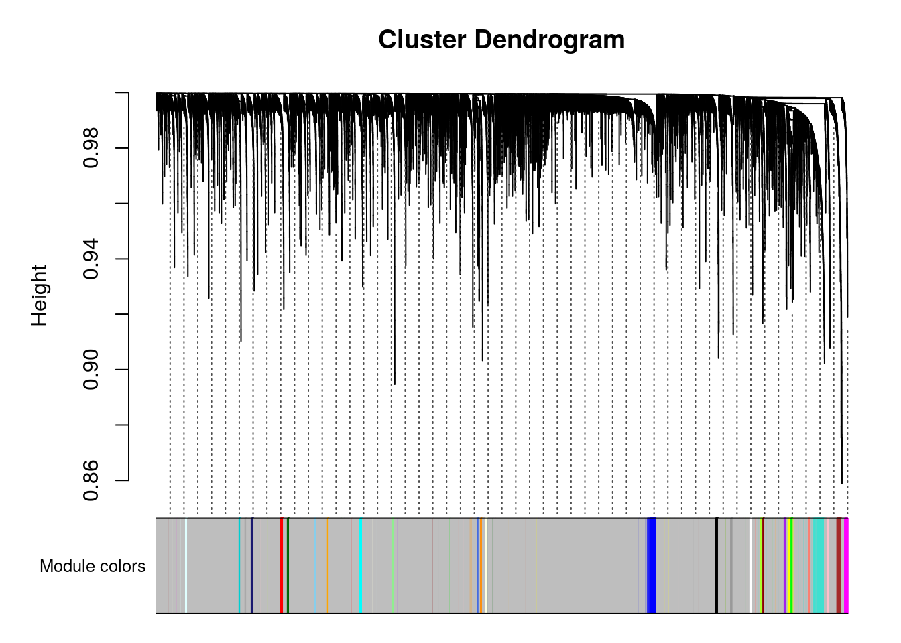
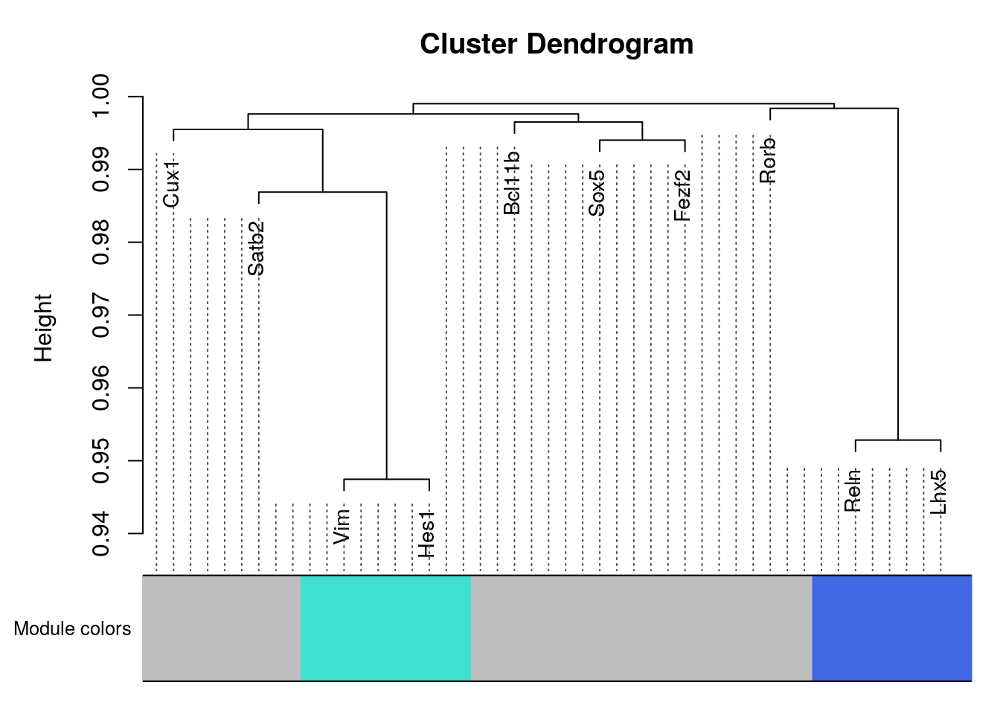

WGCNA experiments
## Loading required package: dynamicTreeCut## Loading required package: stats## Loading required package: fastcluster##
## Attaching package: 'fastcluster'## The following object is masked from 'package:stats':
##
## hclust## ##
## Attaching package: 'WGCNA'## The following object is masked from 'package:stats':
##
## cor## Loading required package: methods## Attaching SeuratObject##
## Attaching package: 'utils'## The following objects are masked from 'package:Matrix':
##
## head, tail##
## Attaching package: 'dplyr'## The following objects are masked from 'package:data.table':
##
## between, first, last## The following objects are masked from 'package:stats':
##
## filter, lag## The following objects are masked from 'package:base':
##
## intersect, setdiff, setequal, union##
## Attaching package: 'graphics'## The following object is masked from 'package:Matrix':
##
## image##
## Attaching package: 'gplots'## The following object is masked from 'package:stats':
##
## lowessdata = as.data.frame(fread(paste(data_dir,"E175_only_cortical_cells.txt.gz", sep = "/"),sep = "\t"))
data = as.data.frame(data)
rownames(data) = data$V1
data = data[,2:ncol(data)]
data[1:10,1:10]## CGTTTAGTTTAC TCTAGAACAACG ACCTTTGTTCGT TTGTCTTCTTCG TAAAATATCGCC
## 0610005C13Rik 0 0 0 0 0
## 0610007N19Rik 0 0 0 0 0
## 0610007P14Rik 2 1 1 1 0
## 0610009B22Rik 1 1 0 0 0
## 0610009D07Rik 2 3 0 3 0
## 0610009E02Rik 0 0 0 0 0
## 0610009L18Rik 0 0 0 2 0
## 0610009O20Rik 0 0 0 0 0
## 0610010F05Rik 1 2 2 0 1
## 0610010K14Rik 0 0 0 0 0
## GTACCCTATTTC GCACATTACCCA CCTCGCGCGGCT TTAATTTTGCCT GTCTTGCGTTTT
## 0610005C13Rik 0 0 0 0 0
## 0610007N19Rik 0 0 2 0 0
## 0610007P14Rik 1 0 0 0 0
## 0610009B22Rik 0 0 1 1 0
## 0610009D07Rik 2 1 2 1 5
## 0610009E02Rik 0 0 0 0 0
## 0610009L18Rik 0 1 1 2 0
## 0610009O20Rik 0 0 0 1 0
## 0610010F05Rik 4 0 1 0 2
## 0610010K14Rik 0 0 0 0 0## Warning: Feature names cannot have underscores ('_'), replacing with dashes
## ('-')E17[["percent.mt"]] <- PercentageFeatureSet(E17, pattern = "^mt-")
VlnPlot(E17, features = c("nFeature_RNA", "nCount_RNA", "percent.mt"), ncol = 3)

plot1 <- FeatureScatter(E17, feature1 = "nCount_RNA", feature2 = "percent.mt")
plot2 <- FeatureScatter(E17, feature1 = "nCount_RNA", feature2 = "nFeature_RNA")
plot1 + plot2E17 <- NormalizeData(E17, normalization.method = "LogNormalize", scale.factor = 10000)
E17 <- FindVariableFeatures(E17, selection.method = "vst", nfeatures = 2000)
# Identify the 10 most highly variable genes
top10 <- head(VariableFeatures(E17), 10)
# plot variable features with and without labels
plot1 <- VariableFeaturePlot(E17)
plot2 <- LabelPoints(plot = plot1, points = top10, repel = TRUE)## When using repel, set xnudge and ynudge to 0 for optimal results
## Centering and scaling data matrix## PC_ 1
## Positive: Fabp7, Aldoc, Mfge8, Dbi, Ednrb, Vim, Slc1a3, Mt3, Apoe, Ttyh1
## Tnc, Sox2, Atp1a2, Ddah1, Hes5, Sparc, Mlc1, Ppap2b, Rgcc, Bcan
## Ndrg2, Qk, Lxn, Id3, Phgdh, Slc9a3r1, Nr2e1, Aldh1l1, Gpx8, Mt1
## Negative: Tubb3, Stmn2, Neurod6, Stmn4, Map1b, Stmn1, Myt1l, Mef2c, Thra, 4930506M07Rik
## Bcl11a, Gap43, Bhlhe22, Syt4, Cntn2, Nell2, Hs6st2, 9130024F11Rik, Olfm1, Satb2
## Akap9, Ptprd, Rbfox1, Clmp, Ina, Enc1, Camk2b, Dync1i1, Dab1, Atp2b1
## PC_ 2
## Positive: Sstr2, Mdk, Meis2, Pou3f2, Eomes, Zbtb20, Unc5d, Sema3c, Fos, Tead2
## Palmd, Mfap4, Nhlh1, Ulk4, H1f0, Uaca, Neurog2, Neurod1, Ezr, Ier2
## Nrn1, Baz2b, Pdzrn3, Btg2, Egr1, Mfap2, Loxl1, H2afv, Hbp1, Nnat
## Negative: Gap43, Sybu, Dync1i1, Meg3, Mef2c, Map1b, Fezf2, Camk2b, Ina, Stmn2
## Cdh13, Thra, Nin, Rac3, Igfbp3, Ssbp2, Neto2, Cd200, Hmgcs1, Tuba1b
## Syt1, Slc6a15, Mapre2, Plk2, Rprm, Atp1b1, Cadm2, Arpp21, Kitl, Ntrk2
## PC_ 3
## Positive: Meg3, Smpdl3a, Slc9a3r1, Slc15a2, Timp3, Tmem47, Ndrg2, Apoe, Ttyh1, Fmo1
## Mlc1, Scrg1, Islr2, Malat1, Gstm1, Gja1, Ndnf, Aldh1l1, Mt3, Sparc
## Serpinh1, Paqr7, Asrgl1, Sepp1, S100a1, Atp1b1, Ctsl, Cpe, S100a16, Lhx5
## Negative: Birc5, Top2a, Cenpm, Pbk, Tpx2, Cenpe, Mki67, Cdca8, Gmnn, Cks2
## Ccnb1, Ccnb2, Spc24, Hmgb2, Cenpf, Tk1, Hmmr, Prc1, Kif11, Ccna2
## 2810417H13Rik, C330027C09Rik, Cdca2, Ect2, Nusap1, Cenpa, Uhrf1, Plk1, Spc25, Knstrn
## PC_ 4
## Positive: Lhx5, Nhlh2, Snhg11, Reln, 1500016L03Rik, Trp73, Cacna2d2, Ndnf, Car10, Lhx1
## Islr2, Pcp4, Meg3, RP24-351J24.2, Rcan2, Pnoc, Mab21l1, Zic1, E330013P04Rik, Emx2
## Malat1, Ebf3, Nr2f2, Zcchc12, Zbtb20, Celf4, Tmem163, Ache, Calb2, Unc5b
## Negative: Ptn, Satb2, 9130024F11Rik, Neurod6, Mef2c, Dab1, Limch1, Hs6st2, Abracl, Dok5
## Gucy1a3, Nell2, Ptprz1, Syt4, Ttc28, Clmp, Macrod2, Fam19a2, Smpdl3a, Ndrg1
## Gstm1, 4930506M07Rik, Paqr7, Aldh1l1, Myt1l, Hmgcs1, Slc15a2, Pdzrn4, Slc9a3r1, Aldoc
## PC_ 5
## Positive: Fam210b, Sfrp1, Pax6, Enkur, Tubb3, Tuba1b, Mcm3, Veph1, Stmn1, Eif1b
## Map1b, Hopx, Abracl, Cdk2ap2, Tfap2c, Rps27l, 2810025M15Rik, Slc14a2, Prdx1, Hells
## Gap43, Sept11, Egln3, Gm1840, Ezr, Cpne2, 9130024F11Rik, Nes, Efnb2, Cux1
## Negative: Serpine2, Id1, Olig1, Sparcl1, Igfbp3, Fam212b, Ccnb2, Ppic, Gng12, Ccnb1
## Bcan, Cenpe, Pbk, Id3, Rasl11a, Plk1, Aqp4, Aspm, Hmmr, Slc6a1
## Slc4a4, Malat1, Myo6, Timp3, Meg3, Cdk1, Prrx1, Npy, B2m, Cspg4
0.1 Test usign all genes normalized by Seurat
## Centering and scaling data matrixseurat.data = as.matrix(E17[["RNA"]]@data)
datExpr0 = t(seurat.data)
gsg = goodSamplesGenes(datExpr0, verbose = 3)## Flagging genes and samples with too many missing values...
## ..step 1## [1] TRUEif (!gsg$allOK){
# Optionally, print the gene and sample names that were removed:
if (sum(!gsg$goodGenes)>0)
printFlush(paste("Removing genes:", paste(names(datExpr0)[!gsg$goodGenes], collapse = ", ")));
if (sum(!gsg$goodSamples)>0)
printFlush(paste("Removing samples:", paste(rownames(datExpr0)[!gsg$goodSamples], collapse = ", ")));
# Remove the offending genes and samples from the data:
datExpr0 = datExpr0[gsg$goodSamples, gsg$goodGenes]
}
sampleTree = hclust(dist(datExpr0), method = "average")
# Plot the sample tree: Open a graphic output window of size 12 by 9 inches
# The user should change the dimensions if the window is too large or too small.
sizeGrWindow(12,9)
#pdf(file = "Plots/sampleClustering.pdf", width = 12, height = 9);
par(cex = 0.6);
par(mar = c(0,4,2,0))
plot(sampleTree, main = "Sample clustering to detect outliers", sub="", xlab="", cex.lab = 1.5,
cex.axis = 1.5, cex.main = 2)No outlier detected.
Automatic network construction and module detection Choose a set of soft-thresholding powers
powers = c(c(1:10), seq(from = 10, to=20, by=2))
# Call the network topology analysis function
sft = pickSoftThreshold(datExpr0, powerVector = powers, verbose = 5)## pickSoftThreshold: will use block size 3465.
## pickSoftThreshold: calculating connectivity for given powers...
## ..working on genes 1 through 3465 of 12909## Warning: executing %dopar% sequentially: no parallel backend registered## ..working on genes 3466 through 6930 of 12909
## ..working on genes 6931 through 10395 of 12909
## ..working on genes 10396 through 12909 of 12909
## Power SFT.R.sq slope truncated.R.sq mean.k. median.k. max.k.
## 1 1 0.688 -6.11 0.821 3.47e+02 3.48e+02 688.0000
## 2 2 0.989 -4.74 0.993 1.72e+01 1.58e+01 88.6000
## 3 3 0.993 -3.10 0.991 1.45e+00 1.09e+00 21.7000
## 4 4 0.967 -2.36 0.963 2.10e-01 1.00e-01 7.9000
## 5 5 0.473 -2.60 0.412 4.94e-02 1.16e-02 3.6000
## 6 6 0.943 -1.78 0.934 1.65e-02 1.60e-03 1.8600
## 7 7 0.467 -2.14 0.419 6.91e-03 2.55e-04 1.1200
## 8 8 0.424 -2.36 0.346 3.34e-03 4.48e-05 0.8220
## 9 9 0.434 -2.22 0.352 1.79e-03 8.48e-06 0.6260
## 10 10 0.420 -2.34 0.297 1.04e-03 1.69e-06 0.4900
## 11 10 0.420 -2.34 0.297 1.04e-03 1.69e-06 0.4900
## 12 12 0.379 -2.01 0.210 4.13e-04 7.38e-08 0.3140
## 13 14 0.359 -1.97 0.245 1.92e-04 3.47e-09 0.2090
## 14 16 0.442 -2.15 0.285 9.92e-05 1.75e-10 0.1410
## 15 18 0.454 -2.08 0.298 5.53e-05 9.02e-12 0.0968
## 16 20 0.456 -2.03 0.301 3.26e-05 4.76e-13 0.0669# Plot the results:
sizeGrWindow(9, 5)
par(mfrow = c(1,2));
cex1 = 0.9;
# Scale-free topology fit index as a function of the soft-thresholding power
plot(sft$fitIndices[,1], -sign(sft$fitIndices[,3])*sft$fitIndices[,2],
xlab="Soft Threshold (power)",ylab="Scale Free Topology Model Fit,signed R^2",type="n",
main = paste("Scale independence"));
text(sft$fitIndices[,1], -sign(sft$fitIndices[,3])*sft$fitIndices[,2],
labels=powers,cex=cex1,col="red");
# this line corresponds to using an R^2 cut-off of h
abline(h=0.90,col="red")
# Mean connectivity as a function of the soft-thresholding power
plot(sft$fitIndices[,1], sft$fitIndices[,5],
xlab="Soft Threshold (power)",ylab="Mean Connectivity", type="n",
main = paste("Mean connectivity"))
text(sft$fitIndices[,1], sft$fitIndices[,5], labels=powers, cex=cex1,col="red")Thresholds tested: 2, 3, 6 The best is 2.
net = blockwiseModules(datExpr0, power = 2, maxBlockSize = 20000,
TOMType = "signed", minModuleSize = 30,
reassignThreshold = 0, mergeCutHeight = 0.25,
numericLabels = TRUE, pamRespectsDendro = FALSE,
saveTOMs = TRUE,
saveTOMFileBase = "E17.5",
verbose = 3)## Calculating module eigengenes block-wise from all genes
## Flagging genes and samples with too many missing values...
## ..step 1
## ..Working on block 1 .
## TOM calculation: adjacency..
## ..will not use multithreading.
## Fraction of slow calculations: 0.000000
## ..connectivity..
## ..matrix multiplication (system BLAS)..
## ..normalization..
## ..done.
## ..saving TOM for block 1 into file E17.5-block.1.RData
## ....clustering..
## ....detecting modules..
## ....calculating module eigengenes..
## ....checking kME in modules..
## ..removing 762 genes from module 1 because their KME is too low.
## ..removing 308 genes from module 2 because their KME is too low.
## ..removing 115 genes from module 3 because their KME is too low.
## ..removing 61 genes from module 4 because their KME is too low.
## ..removing 86 genes from module 5 because their KME is too low.
## ..removing 63 genes from module 6 because their KME is too low.
## ..removing 22 genes from module 7 because their KME is too low.
## ..removing 28 genes from module 8 because their KME is too low.
## ..removing 12 genes from module 9 because their KME is too low.
## ..removing 15 genes from module 10 because their KME is too low.
## ..removing 14 genes from module 11 because their KME is too low.
## ..removing 1 genes from module 12 because their KME is too low.
## ..removing 6 genes from module 14 because their KME is too low.
## ..removing 5 genes from module 15 because their KME is too low.
## ..removing 3 genes from module 16 because their KME is too low.
## ..removing 3 genes from module 17 because their KME is too low.
## ..removing 2 genes from module 19 because their KME is too low.
## ..removing 3 genes from module 20 because their KME is too low.
## ..removing 5 genes from module 22 because their KME is too low.
## ..removing 1 genes from module 23 because their KME is too low.
## ..removing 4 genes from module 26 because their KME is too low.
## ..removing 4 genes from module 27 because their KME is too low.
## ..removing 1 genes from module 30 because their KME is too low.
## ..merging modules that are too close..
## mergeCloseModules: Merging modules whose distance is less than 0.25
## Calculating new MEs...# open a graphics window
sizeGrWindow(12, 9)
# Convert labels to colors for plotting
mergedColors = labels2colors(net$colors)primary.markers = c("Reln","Lhx5","Cux1","Satb2","Rorb","Sox5","Fezf2","Bcl11b","Vim","Hes1")
net$colors[primary.markers]## Reln Lhx5 Cux1 Satb2 Rorb Sox5 Fezf2 Bcl11b Vim Hes1
## 20 20 0 0 0 0 0 0 1 1As we can see the primary markers are not well distributed: it detect layer I and progenitors but all other genes are in the same cluster (module).
Plot the dendrogram and the module colors underneath
plotDendroAndColors(net$dendrograms[[1]], mergedColors[net$blockGenes[[1]]],
"Module colors",
dendroLabels = FALSE, hang = 0.03,
addGuide = TRUE, guideHang = 0.05)
plotNetworkHeatmap(datExpr0, plotGenes = primary.markers,
networkType="unsigned", useTOM=TRUE,
power=2, main="D. TOM in an unsigned network")## ..connectivity..
## ..matrix multiplication (system BLAS)..
## ..normalization..
## ..done.
gene.sets.list = list("primary.markers"=primary.markers,
"NPGs"=c("Nes","Vim","Sox2","Sox1","Notch1", "Hes1","Hes5","Pax6"),
"RG" = c("Vim","Sox2","Pax6","Hes5","Hes1"),
"IN" = c("Tubb3","Tbr1","Stmn1","Neurod1","Dcx"),
"PNGs"=c("Map2","Tubb3","Neurod1","Nefm","Nefl","Dcx","Tbr1"),
"constitutive" =c("Calm1","Cox6b1","Ppia","Rpl18","Cox7c", "Erh","H3f3a","Taf1b","Taf2","Gapdh","Actb", "Golph3", "Mtmr12", "Zfr", "Sub1", "Tars", "Amacr") )
plotNetworkHeatmap(datExpr0, plotGenes = unique(unlist(gene.sets.list)),
networkType="unsigned", useTOM=TRUE,
power=2, main="D. TOM in an signed network")## ..connectivity..
## ..matrix multiplication (system BLAS)..
## ..normalization..
## ..done.
plotNetworkHeatmap(datExpr0, plotGenes = primary.markers,
networkType="signed", useTOM=TRUE,
power=2, main="D. TOM in an signed network")## ..connectivity..
## ..matrix multiplication (system BLAS)..
## ..normalization..
## ..done.
gene.sets.list = list("primary.markers"=primary.markers,
"NPGs"=c("Nes","Vim","Sox2","Sox1","Notch1", "Hes1","Hes5","Pax6"),
"RG" = c("Vim","Sox2","Pax6","Hes5","Hes1"),
"IN" = c("Tubb3","Tbr1","Stmn1","Neurod1","Dcx"),
"PNGs"=c("Map2","Tubb3","Neurod1","Nefm","Nefl","Dcx","Tbr1"))#,
#"constitutive" =c("Calm1","Cox6b1","Ppia","Rpl18","Cox7c", "Erh","H3f3a","Taf1b","Taf2","Gapdh","Actb", "Golph3", "Mtmr12", "Zfr", "Sub1", "Tars", "Amacr") )
genes = unique(unlist(gene.sets.list))
plotNetworkHeatmap(datExpr0, plotGenes = genes, networkType="signed", useTOM=TRUE,
power=2, main="D. TOM in an signed network")## ..connectivity..
## ..matrix multiplication (system BLAS)..
## ..normalization..
## ..done.
## Reln Lhx5 Cux1 Satb2 Rorb Sox5 Fezf2 Bcl11b Vim Hes1
## 20 20 0 0 0 0 0 0 1 1## Reln Lhx5 Cux1 Satb2 Rorb Sox5 Fezf2 Bcl11b Vim Hes1
## 20 20 0 0 0 0 0 0 1 1
## Nes Sox2 Sox1 Notch1 Hes5 Pax6 Tubb3 Tbr1 Stmn1 Neurod1
## 1 1 0 13 1 1 1 0 0 0
## Dcx Map2 Nefm Nefl
## 0 0 0 0# Calculate topological overlap anew: this could be done more efficiently by saving the TOM
# calculated during module detection, but let us do it again here.
dissTOM = 1-TOMsimilarityFromExpr(datExpr0, power = 2);## TOM calculation: adjacency..
## ..will not use multithreading.
## Fraction of slow calculations: 0.000000
## ..connectivity..
## ..matrix multiplication (system BLAS)..
## ..normalization..
## ..done.# Transform dissTOM with a power to make moderately strong connections more visible in the heatmap
plotTOM = dissTOM^7;
# Set diagonal to NA for a nicer plot
diag(plotTOM) = NA;
rownames(dissTOM)=colnames(datExpr0)
colnames(dissTOM)=colnames(datExpr0)
selectTOM = dissTOM[primary.markers, primary.markers]
# There’s no simple way of restricting a clustering tree to a subset of genes, so we must re-cluster.
selectTree = hclust(as.dist(selectTOM), method = "average")
moduleColors = mergedColors
names(moduleColors) = rownames(dissTOM)
selectColors = moduleColors[primary.markers]
# Open a graphical window
sizeGrWindow(9,9)
# Taking the dissimilarity to a power, say 10, makes the plot more informative by effectively changing
# the color palette; setting the diagonal to NA also improves the clarity of the plot
plotDiss = selectTOM^7;
diag(plotDiss) = NA;
TOMplot(plotDiss, selectTree, selectColors, main = "Network heatmap plot, selected genes",col=myheatcol)plotDendroAndColors(selectTree,selectColors,
"Module colors",
dendroLabels = NULL, hang = 0.03,
addGuide = TRUE, guideHang = 0.05)## Warning in pmin(objHeights[dendro$order][floor(positions)],
## objHeights[dendro$order][ceiling(positions)]): an argument will be fractionally
## recycled
1 WGCNA with a sub-sample of genes
2 Test with the 2000 most varied genes
datExpr0 = t(seurat.data[rownames(seurat.data) %in% Var.genes,])
gsg = goodSamplesGenes(datExpr0, verbose = 3)## Flagging genes and samples with too many missing values...
## ..step 1## [1] TRUEif (!gsg$allOK){
# Optionally, print the gene and sample names that were removed:
if (sum(!gsg$goodGenes)>0)
printFlush(paste("Removing genes:", paste(names(datExpr0)[!gsg$goodGenes], collapse = ", ")));
if (sum(!gsg$goodSamples)>0)
printFlush(paste("Removing samples:", paste(rownames(datExpr0)[!gsg$goodSamples], collapse = ", ")));
# Remove the offending genes and samples from the data:
datExpr0 = datExpr0[gsg$goodSamples, gsg$goodGenes]
}
sampleTree = hclust(dist(datExpr0), method = "average");
# Plot the sample tree: Open a graphic output window of size 12 by 9 inches
# The user should change the dimensions if the window is too large or too small.
sizeGrWindow(12,9)
#pdf(file = "Plots/sampleClustering.pdf", width = 12, height = 9);
par(cex = 0.6);
par(mar = c(0,4,2,0))
plot(sampleTree, main = "Sample clustering to detect outliers", sub="", xlab="", cex.lab = 1.5,
cex.axis = 1.5, cex.main = 2)
# Plot a line to show the cut
#abline(h = 400, col = "red")No outliner detected
# Automatic network construction and module detection
# Choose a set of soft-thresholding powers
powers = c(c(1:10), seq(from = 10, to=25, by=2))
# Call the network topology analysis function
sft = pickSoftThreshold(datExpr0, powerVector = powers, verbose = 5)## pickSoftThreshold: will use block size 2000.
## pickSoftThreshold: calculating connectivity for given powers...
## ..working on genes 1 through 2000 of 2000
## Power SFT.R.sq slope truncated.R.sq mean.k. median.k. max.k.
## 1 1 0.882 -3.43 0.9270 6.29e+01 5.70e+01 188.0000
## 2 2 0.961 -2.50 0.9600 4.90e+00 3.12e+00 41.8000
## 3 3 0.961 -1.95 0.9610 7.87e-01 2.95e-01 14.4000
## 4 4 0.927 -1.76 0.9140 2.04e-01 4.01e-02 6.2800
## 5 5 0.361 -2.33 0.2680 7.08e-02 6.98e-03 3.1400
## 6 6 0.368 -2.21 0.2850 2.95e-02 1.40e-03 1.7100
## 7 7 0.345 -2.61 0.2930 1.39e-02 2.82e-04 0.9890
## 8 8 0.342 -2.47 0.3070 7.12e-03 6.31e-05 0.5930
## 9 9 0.366 -1.89 0.3020 3.91e-03 1.49e-05 0.3660
## 10 10 0.311 -1.68 0.1190 2.27e-03 3.43e-06 0.2310
## 11 10 0.311 -1.68 0.1190 2.27e-03 3.43e-06 0.2310
## 12 12 0.280 -1.93 0.0743 8.63e-04 2.01e-07 0.1270
## 13 14 0.379 -2.36 0.3690 3.74e-04 1.25e-08 0.0821
## 14 16 0.436 -2.70 0.3160 1.79e-04 7.91e-10 0.0545
## 15 18 0.433 -2.58 0.3590 9.31e-05 5.07e-11 0.0367
## 16 20 0.468 -2.57 0.3160 5.17e-05 3.32e-12 0.0249
## 17 22 0.490 -2.45 0.4020 3.02e-05 2.16e-13 0.0170
## 18 24 0.498 -2.36 0.4110 1.84e-05 1.47e-14 0.0117Plot the results:
sizeGrWindow(9, 5)
par(mfrow = c(1,2));
cex1 = 0.9;
# Scale-free topology fit index as a function of the soft-thresholding power
plot(sft$fitIndices[,1], -sign(sft$fitIndices[,3])*sft$fitIndices[,2],
xlab="Soft Threshold (power)",ylab="Scale Free Topology Model Fit,signed R^2",type="n",
main = paste("Scale independence"));
text(sft$fitIndices[,1], -sign(sft$fitIndices[,3])*sft$fitIndices[,2],
labels=powers,cex=cex1,col="red");
# this line corresponds to using an R^2 cut-off of h
abline(h=0.90,col="red")
# Mean connectivity as a function of the soft-thresholding power
plot(sft$fitIndices[,1], sft$fitIndices[,5],
xlab="Soft Threshold (power)",ylab="Mean Connectivity", type="n",
main = paste("Mean connectivity"))
text(sft$fitIndices[,1], sft$fitIndices[,5], labels=powers, cex=cex1,col="red")Tested with 5, 3 and 2 and 4. The best seems 2
net = blockwiseModules(datExpr0, power = 2, maxBlockSize = 20000,
TOMType = "signed", minModuleSize = 30,
reassignThreshold = 0, mergeCutHeight = 0.25,
numericLabels = TRUE, pamRespectsDendro = FALSE,
saveTOMs = TRUE,
saveTOMFileBase = "E17.5",
verbose = 3)## Calculating module eigengenes block-wise from all genes
## Flagging genes and samples with too many missing values...
## ..step 1
## ..Working on block 1 .
## TOM calculation: adjacency..
## ..will not use multithreading.
## Fraction of slow calculations: 0.000000
## ..connectivity..
## ..matrix multiplication (system BLAS)..
## ..normalization..
## ..done.
## ..saving TOM for block 1 into file E17.5-block.1.RData
## ....clustering..
## ....detecting modules..
## ....calculating module eigengenes..
## ....checking kME in modules..
## ..removing 552 genes from module 1 because their KME is too low.
## ..removing 154 genes from module 2 because their KME is too low.
## ..removing 86 genes from module 3 because their KME is too low.
## ..removing 42 genes from module 4 because their KME is too low.
## ..removing 20 genes from module 5 because their KME is too low.
## ..merging modules that are too close..
## mergeCloseModules: Merging modules whose distance is less than 0.25
## Calculating new MEs...# open a graphics window
sizeGrWindow(12, 9)
# Convert labels to colors for plotting
mergedColors = labels2colors(net$colors)
# Plot the dendrogram and the module colors underneath
plotDendroAndColors(net$dendrograms[[1]], mergedColors[net$blockGenes[[1]]],
"Module colors",
dendroLabels = FALSE, hang = 0.03,
addGuide = TRUE, guideHang = 0.05)plotNetworkHeatmap(datExpr0, plotGenes = unique(unlist(gene.sets.list)),
networkType="signed", useTOM=TRUE,
power=2, main="D. TOM in an signed network")## Warning: Not all gene names were recognized. Only the following genes were recognized.
## Reln, Lhx5, Cux1, Satb2, Rorb, Sox5, Fezf2, Bcl11b, Vim, Hes1, Nes, Sox2, Sox1, Hes5, Pax6, Tubb3, Stmn1, Neurod1, Nefm, Nefl
## ..connectivity..
## ..matrix multiplication (system BLAS)..
## ..normalization..
## ..done.plotNetworkHeatmap(datExpr0, plotGenes = primary.markers,
networkType="signed", useTOM=TRUE,
power=2, main="D. TOM in an signed network")## ..connectivity..
## ..matrix multiplication (system BLAS)..
## ..normalization..
## ..done.# Calculate topological overlap anew: this could be done more efficiently by saving the TOM
# calculated during module detection, but let us do it again here.
dissTOM = 1-TOMsimilarityFromExpr(datExpr0, power = 2);## TOM calculation: adjacency..
## ..will not use multithreading.
## Fraction of slow calculations: 0.000000
## ..connectivity..
## ..matrix multiplication (system BLAS)..
## ..normalization..
## ..done.# Transform dissTOM with a power to make moderately strong connections more visible in the heatmap
plotTOM = dissTOM^7;
# Set diagonal to NA for a nicer plot
diag(plotTOM) = NA;
rownames(dissTOM)=colnames(datExpr0)
colnames(dissTOM)=colnames(datExpr0)
selectTOM = dissTOM[primary.markers, primary.markers];
# There’s no simple way of restricting a clustering tree to a subset of genes, so we must re-cluster.
selectTree = hclust(as.dist(selectTOM), method = "average")
moduleColors = mergedColors
names(moduleColors) = rownames(dissTOM)
selectColors = moduleColors[primary.markers]
# Open a graphical window
sizeGrWindow(9,9)
# Taking the dissimilarity to a power, say 10, makes the plot more informative by effectively changing
# the color palette; setting the diagonal to NA also improves the clarity of the plot
plotDiss = selectTOM^7;
diag(plotDiss) = NA;
TOMplot(plotDiss, selectTree, selectColors, main = "Network heatmap plot, selected genes",col=myheatcol)plotDendroAndColors(selectTree,selectColors,
"Module colors",
dendroLabels = NULL, hang = 0.03,
addGuide = TRUE, guideHang = 0.05)## Warning in pmin(objHeights[dendro$order][floor(positions)],
## objHeights[dendro$order][ceiling(positions)]): an argument will be fractionally
## recycled
## Reln Lhx5 Cux1 Satb2 Rorb Sox5 Fezf2 Bcl11b Vim Hes1
## 4 4 0 0 0 0 0 0 1 1## Reln Lhx5 Cux1 Satb2 Rorb Sox5 Fezf2 Bcl11b Vim Hes1
## 4 4 0 0 0 0 0 0 1 1
## Nes Sox2 Sox1 <NA> Hes5 Pax6 Tubb3 <NA> Stmn1 Neurod1
## 1 1 0 NA 1 1 1 NA 1 0
## <NA> <NA> Nefm Nefl
## NA NA 0 0## R version 4.0.4 (2021-02-15)
## Platform: x86_64-pc-linux-gnu (64-bit)
## Running under: Ubuntu 18.04.5 LTS
##
## Matrix products: default
## BLAS: /usr/lib/x86_64-linux-gnu/openblas/libblas.so.3
## LAPACK: /usr/lib/x86_64-linux-gnu/libopenblasp-r0.2.20.so
##
## locale:
## [1] LC_CTYPE=en_US.UTF-8 LC_NUMERIC=C
## [3] LC_TIME=en_US.UTF-8 LC_COLLATE=en_US.UTF-8
## [5] LC_MONETARY=en_US.UTF-8 LC_MESSAGES=en_US.UTF-8
## [7] LC_PAPER=en_US.UTF-8 LC_NAME=C
## [9] LC_ADDRESS=C LC_TELEPHONE=C
## [11] LC_MEASUREMENT=en_US.UTF-8 LC_IDENTIFICATION=C
##
## attached base packages:
## [1] graphics utils methods stats base
##
## other attached packages:
## [1] gplots_3.1.1 patchwork_1.1.1 dplyr_1.0.4
## [4] SeuratObject_4.0.0 Seurat_4.0.0 Matrix_1.3-2
## [7] data.table_1.13.6 cluster_2.1.1 WGCNA_1.70-3
## [10] fastcluster_1.1.25 dynamicTreeCut_1.63-1
##
## loaded via a namespace (and not attached):
## [1] backports_1.2.1 Hmisc_4.5-0 plyr_1.8.6
## [4] igraph_1.2.6 lazyeval_0.2.2 splines_4.0.4
## [7] listenv_0.8.0 scattermore_0.7 ggplot2_3.3.3
## [10] digest_0.6.27 foreach_1.5.1 htmltools_0.5.1.1
## [13] GO.db_3.12.1 magrittr_2.0.1 checkmate_2.0.0
## [16] memoise_2.0.0 tensor_1.5 doParallel_1.0.16
## [19] ROCR_1.0-11 globals_0.14.0 matrixStats_0.58.0
## [22] R.utils_2.10.1 jpeg_0.1-8.1 colorspace_2.0-0
## [25] blob_1.2.1 ggrepel_0.9.1 xfun_0.20
## [28] crayon_1.4.0 jsonlite_1.7.2 spatstat_1.64-1
## [31] spatstat.data_2.0-0 impute_1.64.0 survival_3.2-7
## [34] zoo_1.8-8 iterators_1.0.13 glue_1.4.2
## [37] polyclip_1.10-0 gtable_0.3.0 leiden_0.3.7
## [40] future.apply_1.7.0 BiocGenerics_0.36.0 abind_1.4-5
## [43] scales_1.1.1 DBI_1.1.1 miniUI_0.1.1.1
## [46] Rcpp_1.0.6 viridisLite_0.3.0 xtable_1.8-4
## [49] htmlTable_2.1.0 reticulate_1.18 foreign_0.8-81
## [52] bit_4.0.4 preprocessCore_1.52.1 Formula_1.2-4
## [55] stats4_4.0.4 htmlwidgets_1.5.3 httr_1.4.2
## [58] RColorBrewer_1.1-2 ellipsis_0.3.1 ica_1.0-2
## [61] farver_2.0.3 R.methodsS3_1.8.1 pkgconfig_2.0.3
## [64] uwot_0.1.10 nnet_7.3-15 sass_0.3.1
## [67] deldir_0.2-10 labeling_0.4.2 tidyselect_1.1.0
## [70] rlang_0.4.10 reshape2_1.4.4 later_1.1.0.1
## [73] AnnotationDbi_1.52.0 munsell_0.5.0 tools_4.0.4
## [76] cachem_1.0.3 generics_0.1.0 RSQLite_2.2.3
## [79] ggridges_0.5.3 evaluate_0.14 stringr_1.4.0
## [82] fastmap_1.1.0 yaml_2.2.1 goftest_1.2-2
## [85] grDevices_4.0.4 knitr_1.31 bit64_4.0.5
## [88] fitdistrplus_1.1-3 caTools_1.18.1 purrr_0.3.4
## [91] RANN_2.6.1 pbapply_1.4-3 future_1.21.0
## [94] nlme_3.1-152 mime_0.9 R.oo_1.24.0
## [97] compiler_4.0.4 rstudioapi_0.13 plotly_4.9.3
## [100] png_0.1-7 spatstat.utils_2.0-0 tibble_3.0.6
## [103] bslib_0.2.4 stringi_1.5.3 highr_0.8
## [106] lattice_0.20-41 vctrs_0.3.6 pillar_1.4.7
## [109] lifecycle_0.2.0 lmtest_0.9-38 jquerylib_0.1.3
## [112] RcppAnnoy_0.0.18 bitops_1.0-6 cowplot_1.1.1
## [115] irlba_2.3.3 httpuv_1.5.5 R6_2.5.0
## [118] latticeExtra_0.6-29 promises_1.1.1 KernSmooth_2.23-18
## [121] gridExtra_2.3 IRanges_2.24.1 parallelly_1.23.0
## [124] codetools_0.2-18 gtools_3.8.2 MASS_7.3-53.1
## [127] assertthat_0.2.1 withr_2.4.1 sctransform_0.3.2
## [130] S4Vectors_0.28.1 datasets_4.0.4 mgcv_1.8-33
## [133] parallel_4.0.4 grid_4.0.4 rpart_4.1-15
## [136] tidyr_1.1.2 rmarkdown_2.7 Rtsne_0.15
## [139] Biobase_2.50.0 shiny_1.6.0 base64enc_0.1-3